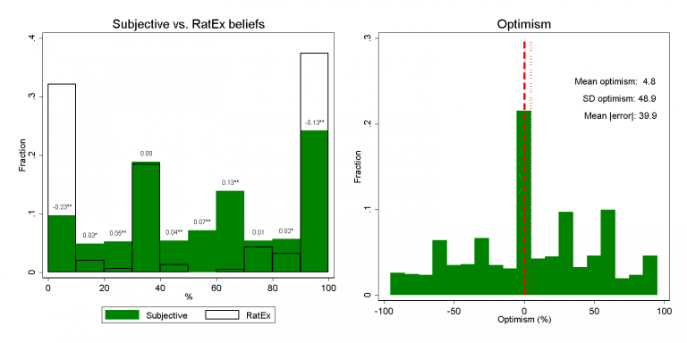

Survey and descriptive results
- Households take advantage of the opportunities to learn about the schools that the NHPS offers
- 66% of households read the school choice catalog, and 60% visited the district's informational website
- Over 90% used some NHPS source to learn about the school choice process
- Most households report considering a wide vireity of schools.
- However, households generally do not understand the details of how the placement process works or know their own admission chances.
- Respondents did worse than random guessing on questions that asked about the role neighborhood priority, sibling priority, and rank order in school placement.
- Households are of by an average of 28 percentage points in their beliefs about admission chances.
- For another 10 perce,t the respondent thought their child had at least a 25% chance of admission at a school where the child was almost sure to be rejected (0.1% chance or lower)
